Hi everyone! I made this output for PE Mobility and Flexibility class (PE 2 MF SBC 2nd Sem AY 24-25) under Sir Czy Navarro.
Day 1: Breath and Stretch
Activities
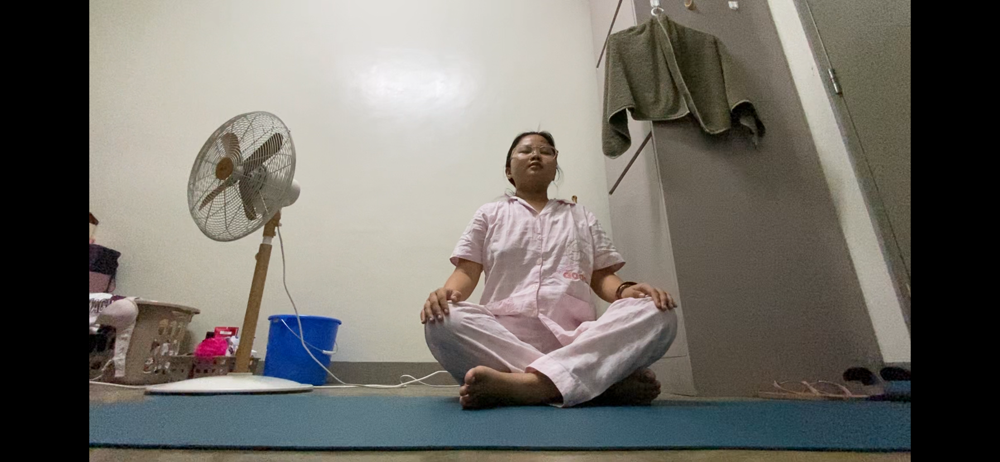
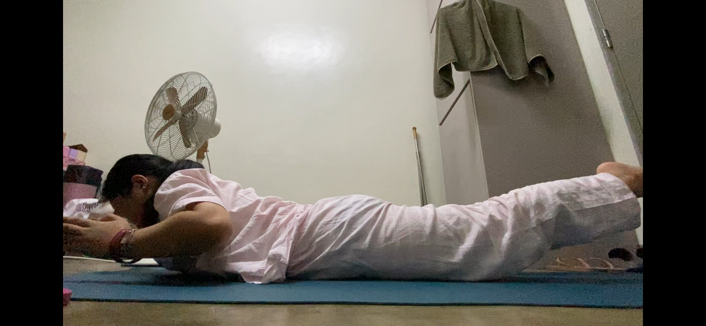
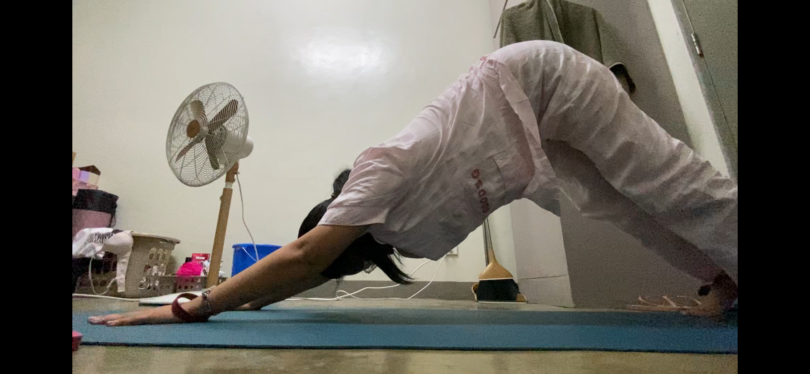
Reflection
I woke up to the smell of smoke. Something must have been burning. Turns out it's from a landfill in Rizal.
I began my day with some breathing exercises, which has become a cherished part of my routine. There's something
immensely satisfying about waking up and immediately engaging in such a fundamental biological activity.
Following that, I transitioned into dynamic stretching, guided by recommendations from Women's Health Magazine .
My routine included exercises from class such as jumping jacks, Protonated YWT, downward dog, and squat to heel raise,
as well as some from a blog: hip openers, reverse lunge with knee drive, lateral lunge with glute pull, and squat to heel raise.
Before diving into my stretches, I felt like my lungs were well-prepared, which was incredibly beneficial.
They facilitated a smoother increase in heart rate, making the exercises feel more effective.
Overall, it was a refreshing way to start my day. I’m definitely going to make breathing exercises a staple in my
daily routine because they add so much value to my well-being.
Day 2: Flow and Feel
Activities
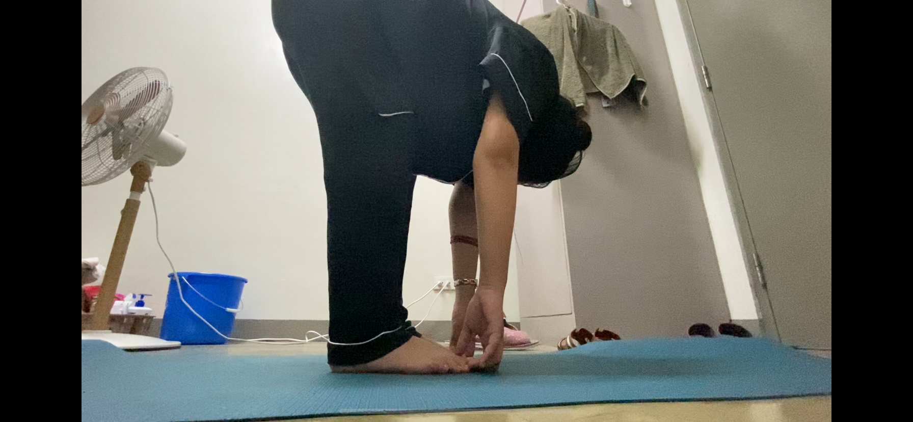
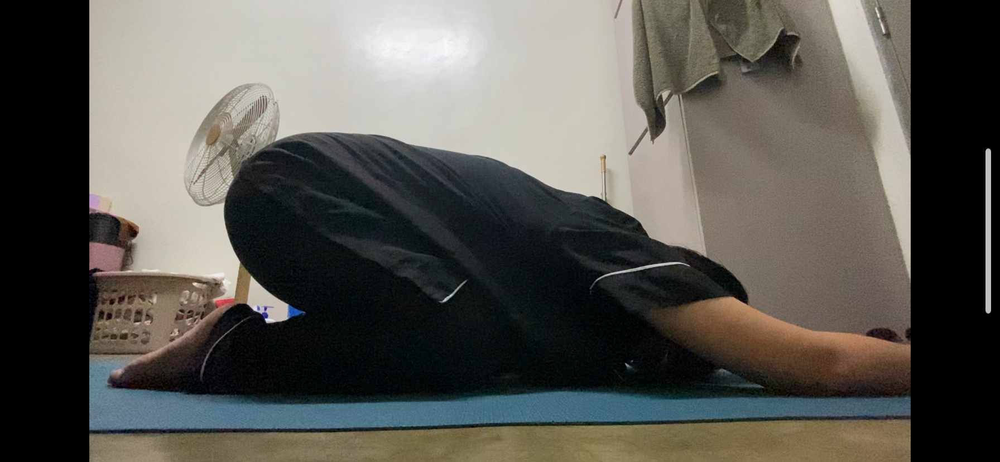
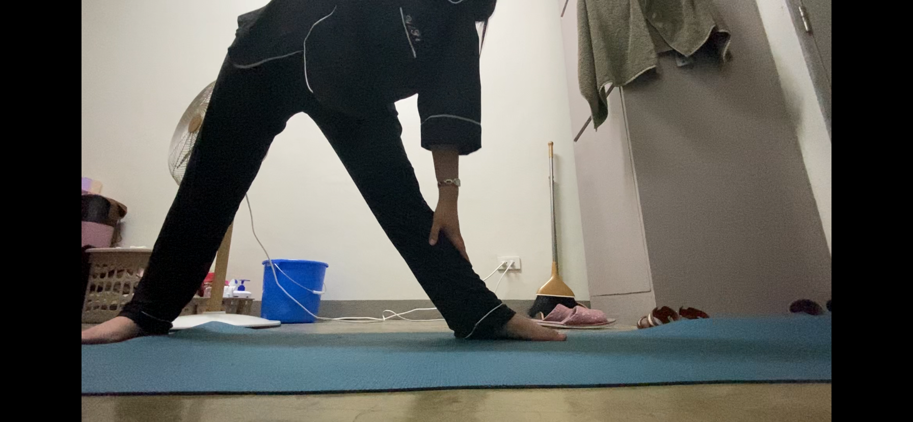
Reflection
Engaging in this practice was truly refreshing. I followed a video guide, "Vinyasa Yoga with Bird," where the instructor frequently encouraged us to “take your time,” a phrase I really appreciated. It alleviated any pressure to rush through the exercises within a strict timeframe. During the session, I also practiced the "box" method of breathing—similar to
the 4-4-8 technique but using a 4-4-4 count instead.
This was beneficial, as Vinyasa Yoga emphasizes the connection between movement and breath. With each repetition of the movements in a "flowing" sequence, I found myself more in tune with my breathing. I was reminded that these vinyasa movements were initially taught to us by Sir Czy. The way the routines are pieced together in the Vinyasa sequence feels like completing a puzzle, resulting in a seamless and complete practice.
Day 3: Walk with Awareness
Activities
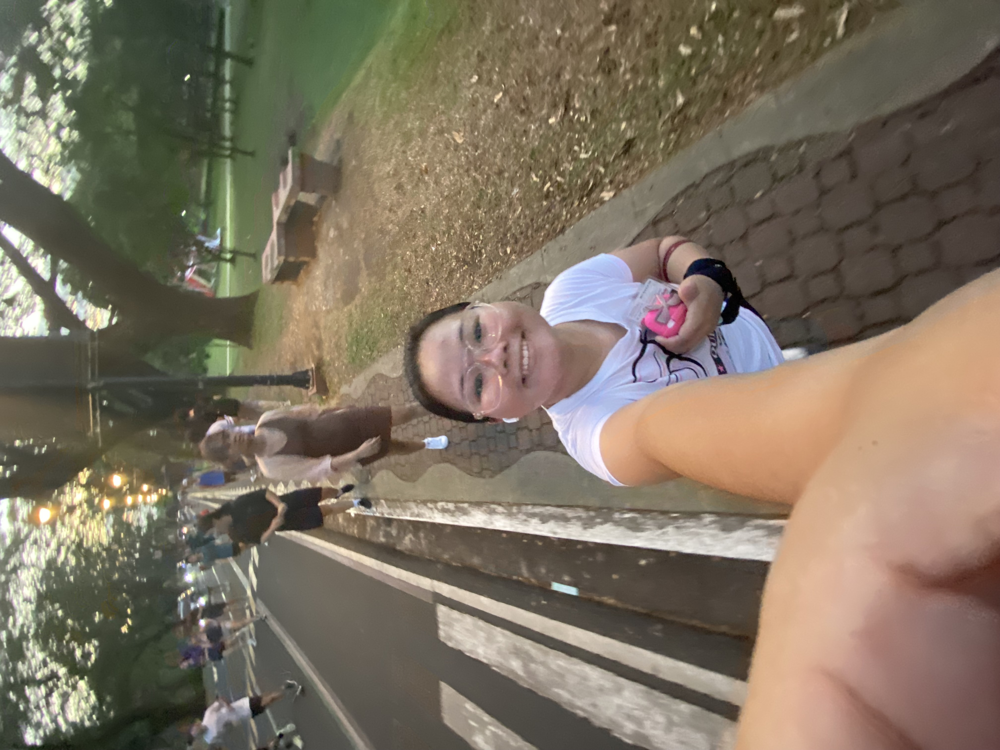
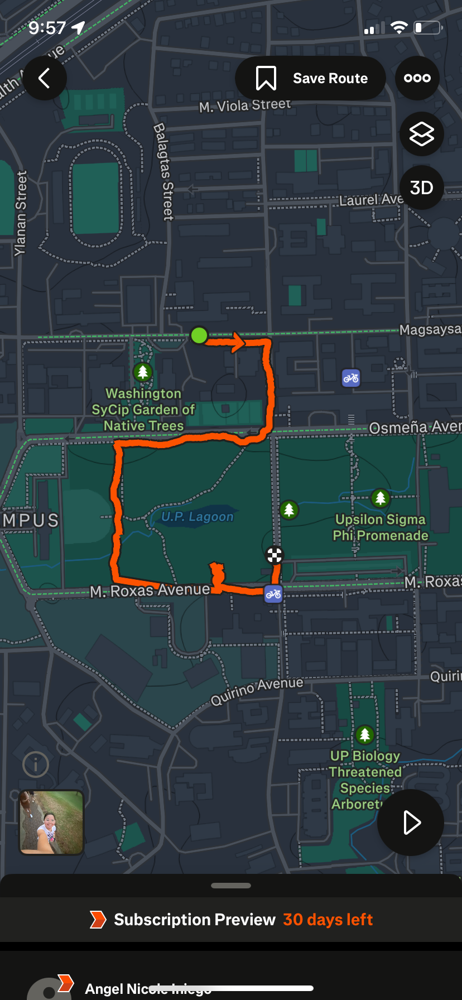
Reflection
After an afternoon run, I took a 15-minute walk to cool down. Despite frequently walking around the campus, I realized there were still areas around the academic oval I hadn't explored. I opted for the “scenic route” through the Washington Sycip Garden of Native Trees, and found it incredibly relaxing. Instead of sticking to the usual path around the academic oval, I wandered through the park, past the University Amphitheater, and towards the Portia Sanctuary. As I walked, I focused on my surroundings and reflected on the multitude of activities that the academic oval hosts simultaneously.
As dusk fell, I had the chance to see the university illuminated, alive with people engaging in various activities like running, walking, and cycling. It was a bustling scene. Although I wore my running shoes, I made a conscious effort to focus on my breathing and footsteps, savoring the moment.
Day 4: Catch Up and Move
Activities
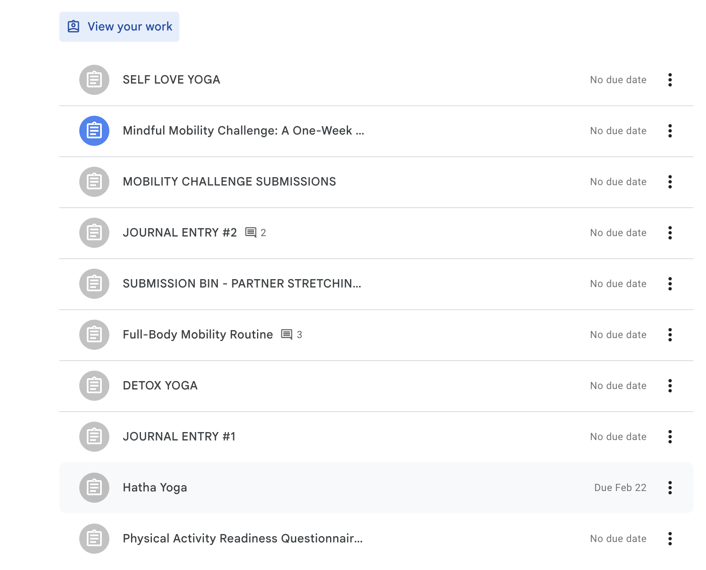
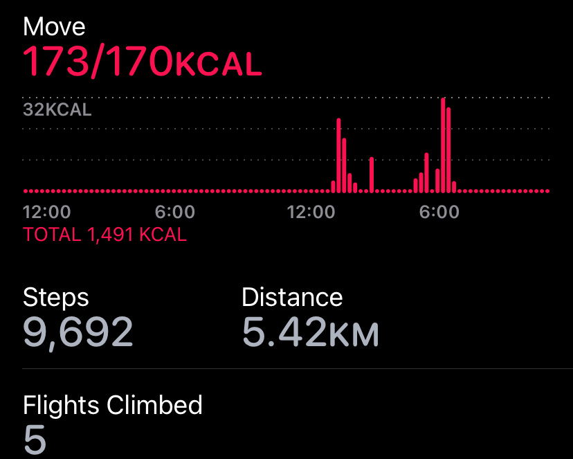
Reflection
Thankfully, I don't have many backlogs, so I've taken this time to organize my work. Reflecting on my progress in movement, I'm truly amazed. Whenever someone asks, “What PE class are you taking?” I proudly respond with "Mobility and Flexibility." Naturally, they're curious about the activities, and I'm quick to mention that we practice headstands in class. If I'm in suitable attire, I love giving them a quick demonstration.
During our first meeting, I also shared insights about rediscovering movements that are often "lost" to us, as we're sometimes advised against "awkward" sitting positions. But now, I've embraced these in warm-ups, mobility routines, and yoga.
I'm thrilled to report that I haven't experienced any back pain for quite some time. I've also shared these yoga routines with my Inang, who now enjoys practicing them regularly—with our cats joining in the fun. The results have not only alleviated her back pain but also enhanced her appreciation for mindful breathing.
Day 5: Strength and Stillness
Activities
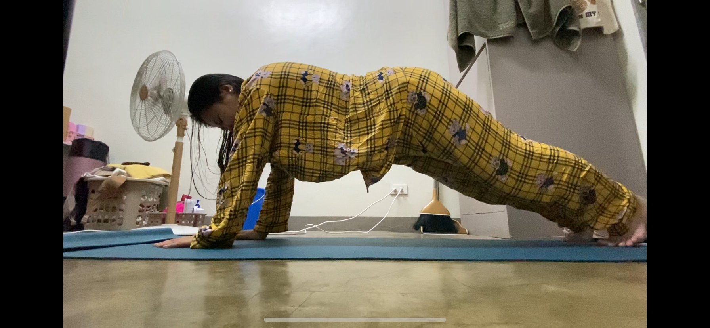
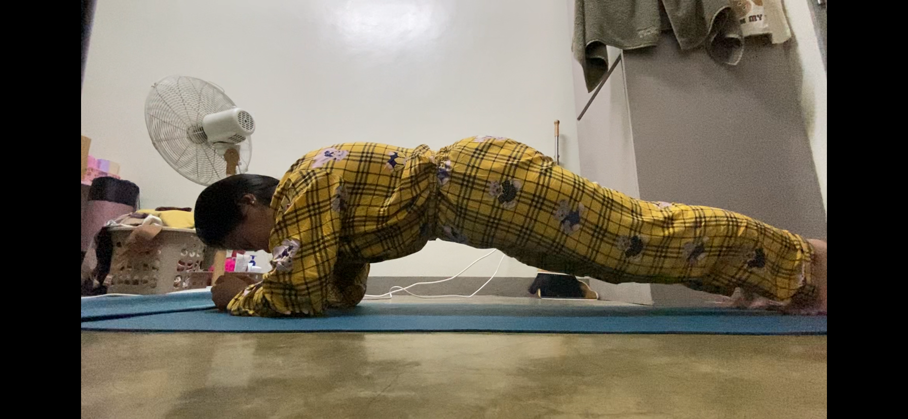
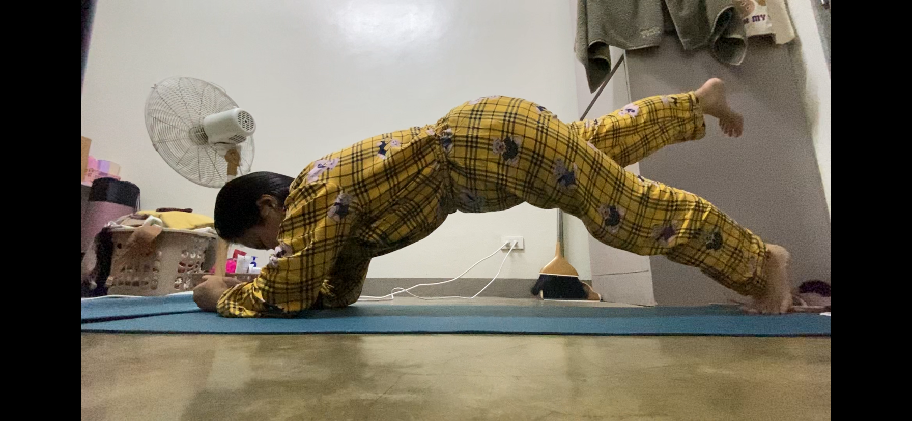
Reflection
Today, I followed a core stability workout by Caroline Girvan, which primarily consisted of a 5-minute plank. After this routine, which involved minimal movement, I concluded with a child's pose. Since I had just woken up when I performed the routine, the child's pose offered a wonderful opportunity to stretch my back muscles.
I have to admit, the effects of the plank stayed with me throughout the day and even into the next day as I engaged in an asynchronous activity. This experience was not only rewarding but also a testament to how I've improved my habit of regularly getting on my yoga mat and engaging in productive exercises.
Day 6: Your Choice Movement
Activities
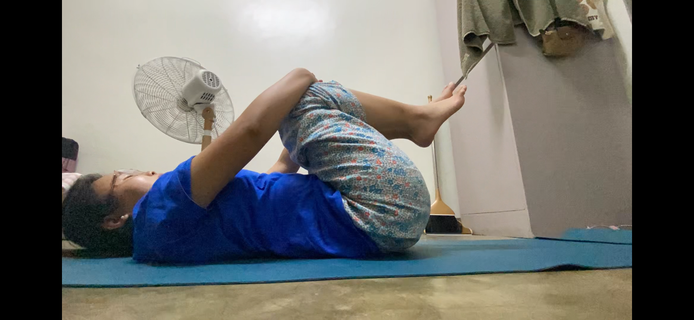
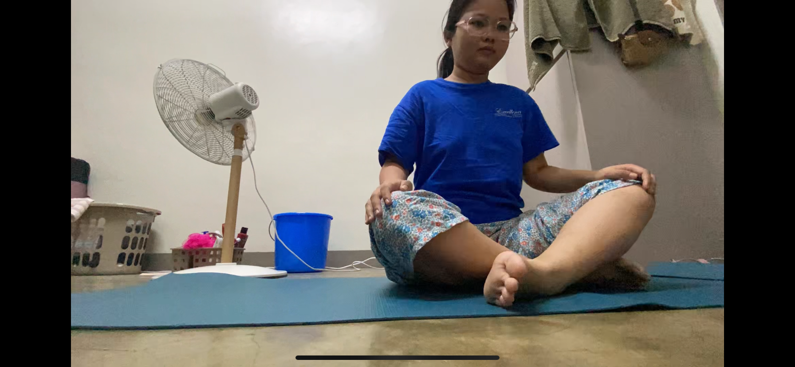
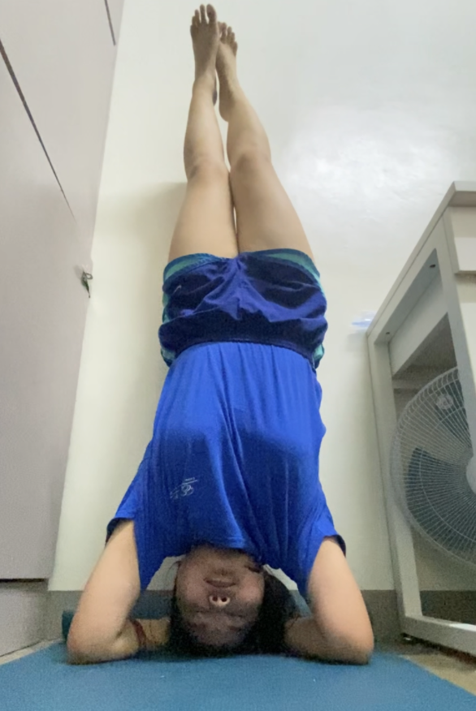
Reflection
I chose to focus on my homework and also incorporated some headstands into my routine. Throughout the course, I've noticed that performing headstands has consistently made me feel better about myself. There's an undeniable sense of satisfaction and well-being that accompanies this practice—they just feel so good.
Physically, headstands are quite impressive and look cool. Sharing pictures of my progress with siblings, cousins, and friends is fun; it not only showcases my achievement but also encourages them to take on the challenge themselves. The act of balancing upside-down engages my core muscles and promotes strength and stability.
Emotionally, headstands symbolize a shift in perspective for me. While humans are naturally designed to stand and move upright, sometimes it's refreshing to literally see the world from a different angle—especially when I'm seeking creativity. This inversion serves as a metaphor for embracing new viewpoints and breaking away from conventional ways of thinking.
The headstand photo is seriously so awkward.
Day 7: Reflect and Reset
Favorite Activities
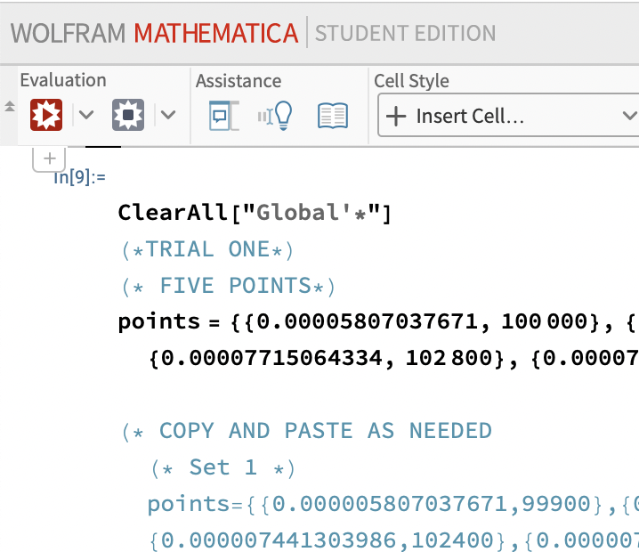
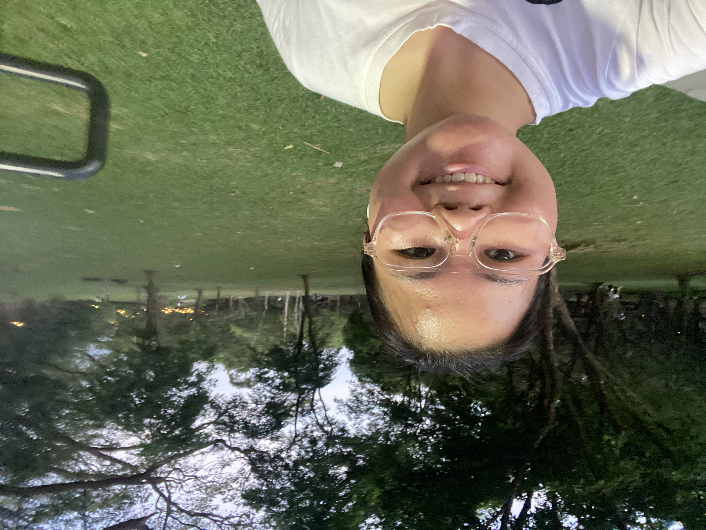
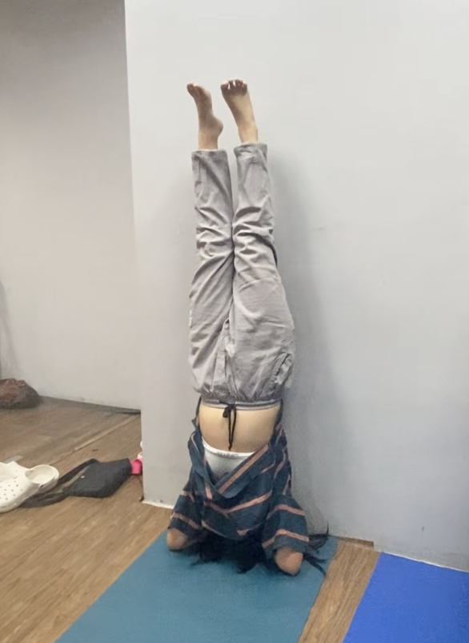
Reflection
I just completed the challenge, and I must say, I thoroughly enjoyed the walking component and the process of documenting the entire experience. Hosting this journey on my website not only allowed me to track my progress but also sparked a newfound enthusiasm for writing and documenting my ideas and achievements.
Completing this activity holds great significance for me, as balancing it with my academic responsibilities was no small feat. I feel a tremendous sense of accomplishment, having achieved so much within a week.
What brings me joy is the realization that leading a healthier lifestyle doesn't require extravagance. I managed to infuse wellness into my routine using simple resources—a yoga mat and accessible walking paths. Moving forward, I aim to make these practices sustainable by beginning my mornings with simple breathing exercises and adopting a mindful approach to walking.
This experience has taught me that wellness can be integrated seamlessly into daily life, and I plan to carry these insights forward, nurturing both my physical and mental well-being.
Bonus: I really love headstands. Like me, they're looking at things differently!
I can't help but say it again... The headstand photo is seriously so awkward.